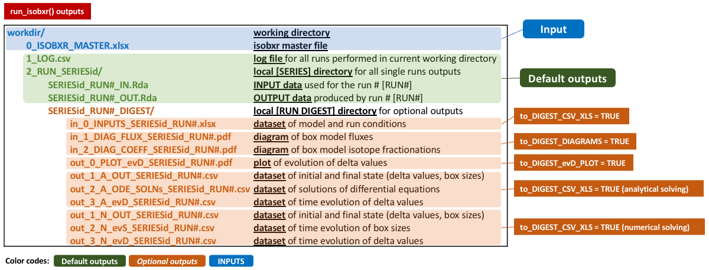

Main arguments for run_isobxr
The run_isobxr function takes required and optional arguments that are described in this section.
All arguments definitions of the run_isobxr function are accessible in its documentation called as follows
?run_isobxr
run_isobxr required arguments
The arguments required to run the run_isobxr function are examplified and described here:
run_isobxr(workdir = "/Users/username/1_isobxr_working_directory/", SERIES_ID = "Name_of_SERIES_ID", # defining the name of the SERIES of run flux_list_name = "Fx3_ABC_open_bal", # calling the list of fluxes coeff_list_name = "a1", # calling the list of coefficients t_lim = 1000, # running model for 1000 time units nb_steps = 100, # running model with 100 steps time_units = c("d", "yr")) # plot results in years as time units.
- workdir
- Working directory of 0_ISOBXR_MASTER.xlsx master file and where output files will be stored.
- SERIES_ID
- Name of the model series the run belongs to. It determines the folder in which the output files will be stored.
- flux_list_name
- Name of the list of fluxes and initial box sizes to be used for the run, calling (by its header name) a single column of the FLUXES sheet of the 0_ISOBXR_MASTER.xlsx file.
- coeff_list_name
- Name of the list of fractionation coefficients to be used for the run, calling (by its header name) a single column of the COEFFS sheet of the 0_ISOBXR_MASTER.xlsx file.
- t_lim
- Run duration, given in the same time units as the fluxes.
- nb_steps
- Number of calculation steps. It determines the resolution of the run.
- time_units
- Vector defining the initial time unit (identical to unit used in fluxes), followed by the time unit used for the graphical output
- to be selected amongst the following: micros, ms, s, min, h, d, wk, mo, yr, kyr, Myr, Gyr
- e.g., c("d", "yr") to convert days into years
run_isobxr default and optional outputs
The run_isobxr outputs are stored in the working directory.
The run_isobxr outputs are structured as follows:

In addition to the default outputs, the run_isobxr function allows to:
- export system diagrams (as pdf, using the to_DIGEST_DIAGRAMS = TRUE argument)
- export evolution of isotope compositions (as pdf, using the to_DIGEST_evD_PLOT = TRUE argument)
- export input and output datasets (as csv and xlsx, using the to_DIGEST_CSV_XLS = TRUE argument)
These arguments are called as follows:
run_isobxr(workdir = "/Users/username/1_isobxr_working_directory/", SERIES_ID = "Name_of_SERIES_ID", flux_list_name = "Fx3_ABC_open_bal", coeff_list_name = "a1", t_lim = 1000, nb_steps = 100, time_units = c("d", "yr"), to_DIGEST_DIAGRAMS = TRUE, # default is TRUE to_DIGEST_evD_PLOT = TRUE, # default is TRUE to_DIGEST_CSV_XLS = TRUE # default is FALSE )
run_isobxr forcing arguments
Forcing initial box sizes
By default, run_isobxr sets the initial box sizes at the values found in the flux list.
It is possible to manually overwrite the initial size of one, several or all boxes for a given run performed by run_isobxr.
It is done by defining a data frame structured as follows.
FORCING_SIZE <- data.frame(BOXES_ID = c("BOX_1", "...", "BOX_i", "..."), SIZE_INIT = c("updated_size_1", "...", "updated_size_i", "...")) FORCING_SIZE #> BOXES_ID SIZE_INIT #> 1 BOX_1 updated_size_1 #> 2 ... ... #> 3 BOX_i updated_size_i #> 4 ... ...
For the 3-boxes closed system model (ABC), in order to change the size of box C from 2000 mg of Ca (default as specified in isobxr master file for all flux lists of FLUXES sheet) to 3000 mg of Ca, the data frame should be structured as follows:
FORCING_SIZE <- data.frame(BOXES_ID = c("C"), SIZE_INIT = c(3000)) FORCING_SIZE #> BOXES_ID SIZE_INIT #> 1 C 3000
Forcing initial delta values
By default, the run_isobxr function sets the initial delta values of all boxes at 0 ‰.
It is possible to manually overwrite the initial delta values of one, several or all boxes for a given run performed by run_isobxr.
It is done by defining a data frame structured as follows.
FORCING_DELTA <- data.frame(BOXES_ID = c("BOX_1", "...", "BOX_i", "..."), DELTA_INIT = c("updated_delta_1", "...", "updated_delta_i", "...")) FORCING_DELTA #> BOXES_ID DELTA_INIT #> 1 BOX_1 updated_delta_1 #> 2 ... ... #> 3 BOX_i updated_delta_i #> 4 ... ...
For the 3-boxes closed system model (ABC), in order to force initial isotope composition of box A to -1‰, and leave B and C initial values at 0‰, the data frame should be structured as follows:
FORCING_DELTA <- data.frame(BOXES_ID = c("A"), DELTA_INIT = c(-1)) FORCING_DELTA #> BOXES_ID DELTA_INIT #> 1 A -1
Forcing isotope fractionation coefficients
By default, the run_isobxr function sets the isotope fractionation coefficients at the values found in the coefficients list specified by user.
It is possible to manually overwrite the fractionation coefficients of one, several or all pairs of boxes for a given run performed by run_isobxr.
It is done by defining a data frame structured as follows.
FORCING_ALPHA <- data.frame(FROM = c("BOX_i", "..."), TO = c("BOX_j", "..."), ALPHA = c("new_coeff_value", "..."), FROM_TO = c("BOX_i_BOX_j", "...")) FORCING_ALPHA #> FROM TO ALPHA FROM_TO #> 1 BOX_i BOX_j new_coeff_value BOX_i_BOX_j #> 2 ... ... ... ...
For the 3-boxes closed system model (ABC), in order to force the fractionation coefficient associated to the flux of Ca from box A to B to the value of 1.02, the data frame should be structured as follows:
FORCING_ALPHA <- data.frame(FROM = c("A"), TO = c("B"), ALPHA = c(1.02), FROM_TO = c("A_B")) FORCING_ALPHA #> FROM TO ALPHA FROM_TO #> 1 A B 1.02 A_B
Forcing fractionation coefficient to a Rayleigh distillation model
It is possible to overwrite isotope fractionation coefficients by defining their values as the result of Rayleigh type isotope distillation in the context of a fractional exchange at an interface.
We consider here the case of the loss of element X from a box A to a box C through an interface box B, all possibly part of a bigger box model system.
We suppose that the apparent fractionation coefficient \(\alpha_{A \to C}\) associated to this flux \(F_{A \to C}\) results from a Rayleigh type distillation occuring during the fractional exchange of element X at the interface box B.

In this situation, the box A exchanges element X with box B (and possibly other boxes).
This is a fractional exchange, i.e. during this exchange, box A sends more of element X to box B than B sends back (\(F_{A \to B} > F_{B \to A}\)).
As we consider box B to be balanced, it loses the difference to box C: \(F_{B \to C} = F_{A \to B} - F_{B \to A}\).
As a result, box A loses a total of \(F_{B \to C}\) of element X per time unit.
We suppose here that the \(F_{A \to B}\) that feeds box B is associated to no isotope fractionation.
On the other hand, we suppose that the \(F_{B \to A}\) flux corresponding to the fractional loss of element X from interface box B, and returning to box A, is associated to an equilibrium or incremental isotope fractionation (\(\alpha^0 _{B \to A}\)).
The Rayleigh distillation model of isotopes thus predicts the following:
\[R_{C} = R_{C, t_0} \dfrac{F_{B \to C}}{F_{A \to B}}^{\alpha^0 _{B \to A} - 1} \]
The \(R_{C, t_0}\) corresponds to the isotope ratio of the element X in box B before any exchange with box A occurs. It is thus equivalent to \(R_{A}\) since the box B only input is via the \(F_{A \to B}\) flux.
We thus can write the following definition of \(\alpha_{B \to C}\) (equivalent here to \(\alpha_{A \to C}\)):
\(\alpha_{B \to C} = \dfrac{R_{C}}{R_{A}} = \dfrac{F_{B \to C}}{F_{A \to B}}^{\alpha^0 _{B \to A} - 1}\)
The run_isobxr function here takes as an optional input the data frame structured as follows:
FORCING_RAYLEIGH <- data.frame(XFROM = c("B"), # Define the B>C flux at numerator XTO = c("C"), YFROM = c("A"), # Define the A>B flux at denominator YTO = c("B"), AFROM = c("B"), # Define the resulting fractionation coefficient ATO = c("C"), ALPHA_0 = c("a0") # Define the value of incremental B>A coefficient ) FORCING_RAYLEIGH #> XFROM XTO YFROM YTO AFROM ATO ALPHA_0 #> 1 B C A B B C a0
The run_isobxr function will in this case overwrite the value of \(\alpha_{B \to C}\) set in isobxr master file or using the FORCING_ALPHA parameter.
Indeed, if the user forced a new value for \(\alpha_{B \to C}\) using the FORCING_ALPHA parameter, the run_isobxr function will prioritize the FORCING_RAYLEIGH parameter.
It is possible to define several Rayleigh distillation apparent fractionation coefficients in a given model.
This is done by adding rows to this data frame.